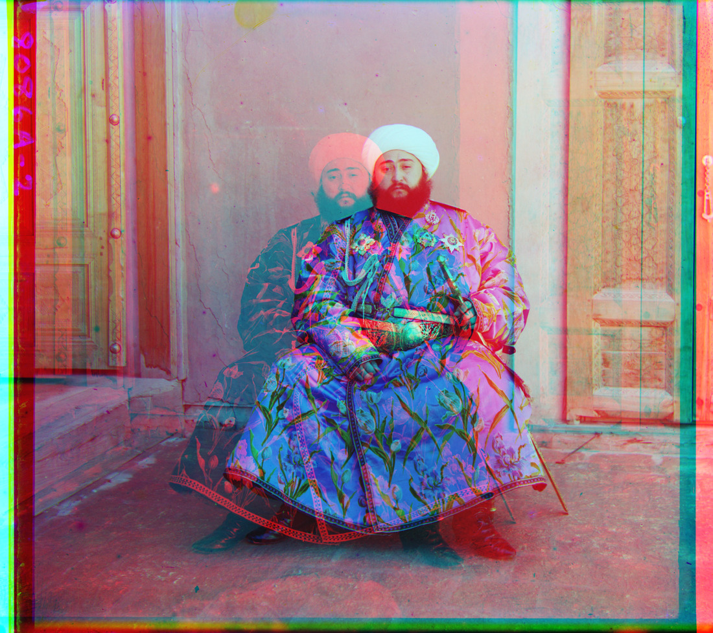
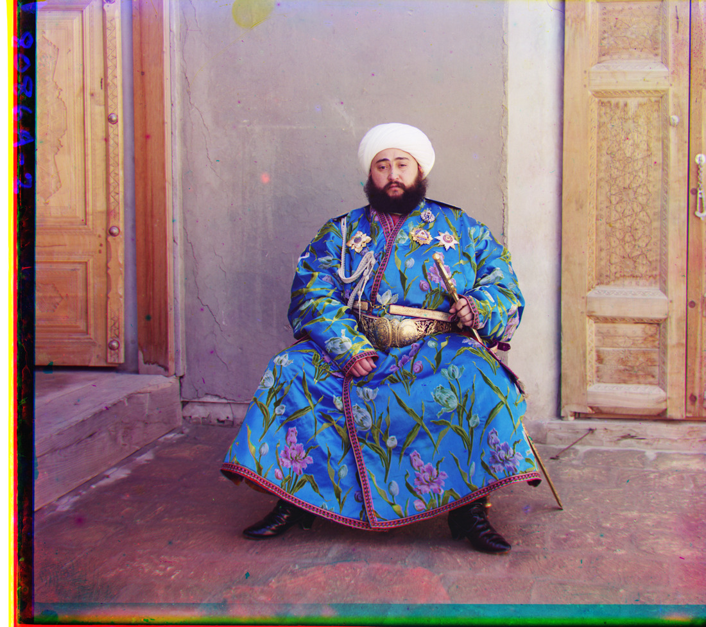

Project 1: Images of the Russian Empire
Method
Split each scan into equal-height B, G, R channels; discard up to two trailing rows. Convert to [0, 1] using the dtype maximum (255 or 65,535). Align G and R to B using integer translations.
Maximize normalized cross-correlation (NCC) of intensity values:
NCC(A, B) = Σ[(A − Ā)(B − B̄)] / √[Σ(A − Ā)² Σ(B − B̄)²]
Mean subtraction and normalization tolerate uniform brightness and contrast differences. Exclude a 10% border; enlarge it as needed so all candidates use the same valid reference region.
Single scale
Exhaustively test every (x, y) in [−15, 15]²: 961 candidates per channel. Score every interior pixel for the three JPEGs.
Image pyramid
Large scans require larger shifts. Build the pyramid explicitly: Gaussian smoothing (σ = 1), then 2× downsampling until the longest side is ≤300 pixels. Search ±15 at the coarsest level. Double the offset at each finer level and refine within ±3, ending at full resolution.
For speed, pyramid scores sample a regular grid: stride max(1, ⌈√(interior area / 60,000)⌉). This approximates dense NCC while preserving single-pixel shift increments. Use the same parameters for every image; no automatic registration or pyramid library.
Apply shifts with array rolls, stack RGB, and crop to the common valid overlap. Scan borders may remain. Offsets below are (x, y): positive x moves right, positive y down. Only webpage previews are resized; click images for full resolution.
Single-scale results


All three align successfully; their offsets match the pyramid results.
Pyramid results: 14 provided scans


Pyramid results: 3 additional photographs
Original three-frame LoC negatives, processed at full resolution with the same parameters.


Results and limitations
Raw-intensity NCC fails on Emir: its blue robe changes brightness differently across filters, producing an incorrect red-channel shift. The other 16 scenes align globally. The edge extension below corrects Emir. Subject motion and scan borders leave local fringes; translation cannot correct rotation or independent motion, and sparse scoring can miss fine texture.
Median baseline alignment: 0.47 s; maximum: 0.54 s. Timing includes both channel searches and pyramid construction, excluding loading and saving.
Bells and whistles
1. Edge-based alignment
Smooth each pyramid level (Gaussian σ = 1), compute Sobel gradient magnitude √(Iₓ² + Iᵧ²), then apply the same NCC search. Shared boundaries are more consistent across color filters than brightness, correcting Emir’s doubled portrait.


Both views use the same valid rectangle. Motion and damaged borders can still leave fringes.
2. Automatic contrast
Map the pooled RGB 0.5th and 99.5th percentiles to 0 and 1: I′ = clip((I − p₀.₅)/(p₉₉.₅ − p₀.₅), 0, 1). Estimate percentiles on a stride-4 grid; apply one shared mapping to every pixel. Church uses 0.0499 and 1.0000, deepening dark tones without independent channel adjustments.

{kind=link}
{kind=link}
{kind=link}
The change is modest; extreme tones may clip. This adjusts contrast, not white balance.